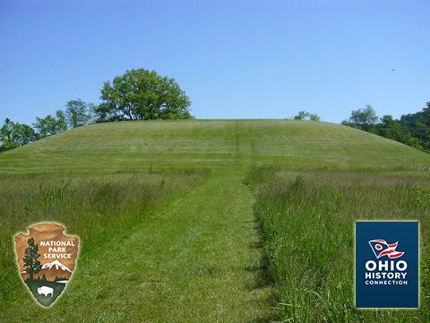
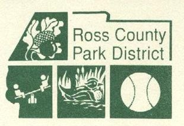
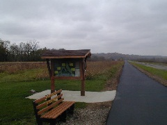

Bacon ipsum dolor amet pancetta drumstick cupim tongue sirloin prosciutto beef fatback. Ham swine corned beef meatloaf jerky hamburger flank. Picanha beef ribs landjaeger pig turducken tenderloin doner ground round kevin bacon porchetta short ribs prosciutto ball tip pork.
Thank you for your interest in supporting Hopewell Culture National Historical Park. Your donation will enhance the programs and activities to protect park resources and provide visitor services. Philanthropic contributions continue to make a significant difference and we welcome and are grateful for your support. If you are interested in donating to the park directly, you may contact the Superintendent by phone (740-774-1126) or e-mail us. Donations may be sent to: Superintendent, 16062 State Route 104, Chillicothe, Ohio 45601.
The National Park Foundation is the congressionally-chartered national philanthropic partner of the National Park System. The National Park Foundation stewards a tradition of private support for the parks begun by the American people more than a century ago. Your support for the National Park Foundation ensures that the evolving history and rich heritage of our Nation remains vital and relevant.
For more information contact them at:
National Park Foundation, 1110 Vermont Ave. NW, Suite 200, Washington, DC 20005, Phone: (202) 796-2500, www.nationalparks.org
Become part of the VIP program by assisting park staff with interpretive, biological, archeology, or maintenance projects. Every year volunteers donate over 2,000 hours to Hopewell Culture! The work done by volunteers at Hopewell Culture is invaluable to the park, the community and visitors. Individuals or groups can volunteer at any time of the year. Contact the park's volunteer coordinator by phone at 740-774-1126 or send an email request for more information.
The VIP program began in 1969 when congress passed the Volunteers in the Parks Act of 1969. Read Director's Order #7: Volunteers in Parks, which has more information about volunteering in the national parks.
For more information and/or to volunteer, please email park biologist Dafna Reiner or call her at the park during normal business hours at 740-774-1126.
The National Park Service turns 100 on August 25, 2016. As we lead up to the centennial, we invite you to participate in Find Your Park Experiences to learn, discover, be inspired, or simply have fun in national parks. Find Your Park Experiences offer unique opportunities to explore national parks both in person and online. Check out the experiences in this park or search all experiences to identify an opportunity that matches your interests. You can also share your national park story at FindYourPark.com.
A Call to Action remains the foundation for our 2016 centennial preparations. It is the National Park Service's blueprint for the future, outlining the innovative work we want to accomplish. Hopewell Culture National Historical Park is a big part of this effort. Take a look at what we're doing and get involved!
Students from New Albany Middle School were awarded a "Ticket to Ride” to Hopewell Culture National Historical Park following an in depth National Park Service project completed in the classroom. With their chaperones, 300 8th grade students were immersed in hands-on science, art, living history interpretation, and habitat restoration during their park visit on May 10th. The goal of the visit was to transform student ideas into park experiences for youth. Read more
Hopewell Culture National Historical Park partners with local organizations to fulfill its mission to preserve, protect, and interpret the remnants of the park's five earthwork complexes and one additional site co-managed with the Arc of Appalachia.
The Spruce Hill works are owned by the Arc of Appalachia Perserve System and co-managed by Hopewell Culture NHP and Ross County Park District. Spruce Hill is one of the best remaining examples of hilltop enclosures fabricated by the Hopewell Culture. The non-profit Arc of Appalachia Preserve System was founded in 1995 as a grassroots organization to preserve forest and associated Eastern eco-systems, as well as ancient earthworks and historical buildings. Visit The Arc of Appalachia website to learn more about their organization. Read the Spruce Hill story to discover how The Arc rescued the site from auction.
Since the early 20th century, much of the Seip Earthworks unit was owned by the Ohio History Connection (OHC) (formerly known as the The Ohio State Archaeological and Historical Society and the Ohio Historical Society). Between 1992 and 2014, The National Park Service partnered with the Ohio History Connection in co-owning and co-managing the Seip Earthworks site.
More recently, after a decades worth of arranging and planning, the deed of ownership to Seip Earthworks was officially transferred from OHC to the National Park Service on September 3, 2014. Even though the government-owned majority of Seip Earthworks is now solely under the possession and management of Hopewell Culture NHP, we will continue our proud partnership with OHC in meaningful and creative ways to preserve and protect the remnants of the Hopewell Culture.

Recreational trails at the Hopewell Mound Group are the result of a partnership with the Ross County Park District. This partner helped convert a mile of abandoned B & O railroad corridor to the Tri-County Triangle Trail. The Ross County Park District also co-manages Spruce Hill works with Hopewell Culture NHP and the Arc of Appalachia Preserve System.

The multi-use trail at the Hopewell Mound Group is a partnership with the Tri-County Triangle Trail, a non-profit organization. The trail connects the towns of Chillicothe, Frankfort and Washington Court House via a 28+ mile paved section. Parking and restrooms are located adjacent to the trail at the park's Hopewell Mound Group facilities on Sulphur Lick Road. Visit the Tri-County Triangle Trail website for more information.
